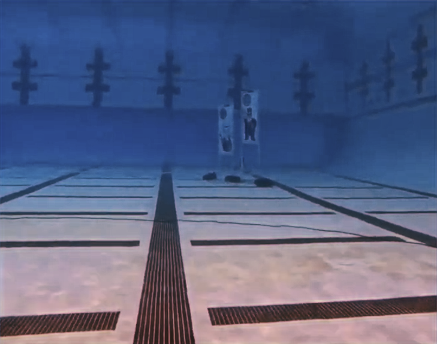

My Involvements

👀 Soon...
Upcoming Projects

July 2023
G-Man or Bootlegger Object Detection

March 2023
🏢 Organizations -> 🔗 Dr. Shwartz Machine Intelligence Lab (MIL)
The Machine Intelligence Laboratory (MIL) provides a synergistic environment dedicated to the study and development of intelligent, autonomous robots. The faculty and students associated with the laboratory conduct research in the theory and realization of machine intelligence covering topics such as machine learning, real-time computer vision, statistical modeling, robot kinematics, autonomous vehicles, teleoperation and human interfaces, robot and nonlinear control, computational intelligence, neural networks, and general robotics. Applications of MIL research include autonomous underwater vehicles (AUVs), autonomous water surface vehicles (ASVs), autonomous land vehicles, autonomous air vehicles (AAVs including quadcopters and micro air vehicles, MAVs) , swarm robots, humanoid robots, and autonomous household robots. - mae.ufl.edu
👀 Soon...
July 2023
March 2023